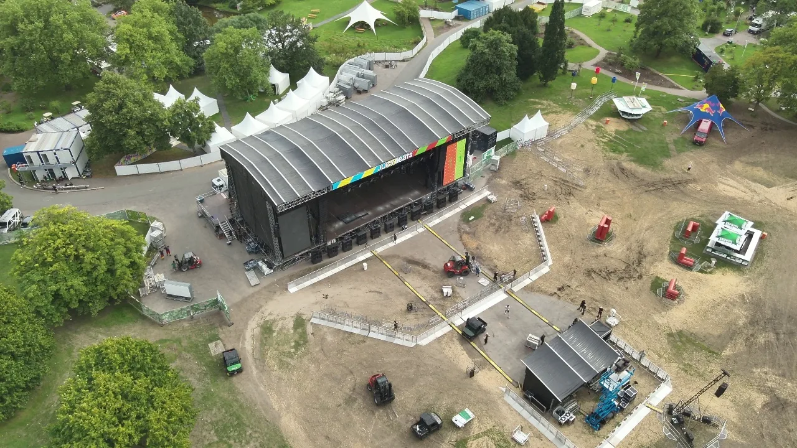
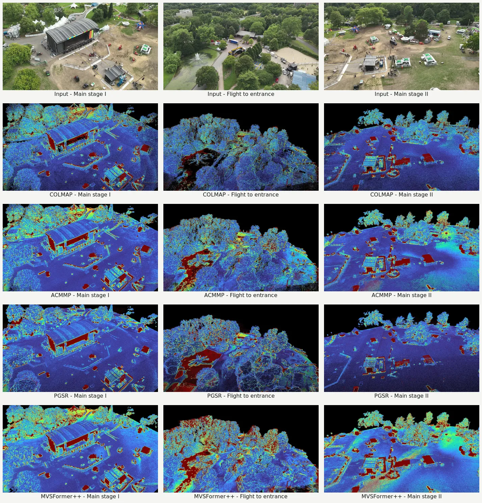

Georeferenced aerial video dataset
JB3D
An Aerial Video Dataset With Per-Frame Camera Poses and LiDAR Ground Truth for Multi-View Stereo and Novel View Synthesis
MVS benchmark available · NVS benchmark in preparation
A compact view of the acquisition setting, camera trajectories, LiDAR reference geometry, and benchmark reconstructions.
Download 720p MP4 · 9.6 MBDataset
Dataset overview
JB3D combines manually flown 4K RGB video with estimated 30 FPS camera trajectories, supporting RGB and thermal still imagery, and dense LiDAR reference geometry. Every modality is registered in a common coordinate frame.
The 14 benchmark sequences contain 36,752 frames. Five additional georeferenced videos contribute 9,687 frames with challenging motion or coverage outside the LiDAR evaluation regions.
- Video
- 3840 × 2160 · 30 FPS · 60–80 m altitude
- Still imagery
- approximately 5,000 RGB · 3,000 thermal
- Reference geometry
- five LiDAR point clouds · up to 2,551 points/m²
- Coverage
- approximately 650 × 750 m
MVS benchmark
Quantitative evaluation of reconstructed point clouds
The reconstructed point clouds from COLMAP, ACMMP, MVSFormer++, and PGSR are compared with the LiDAR ground truth. Across all scenes, we apply scene-specific cropping and voxel downsampling at a resolution of 2.5 cm. Completeness and F1 use a threshold of 5 cm; L1-abs and RMSE are calculated using the best 90 percent of estimate-to-reference distances.
| Scene | Method | Cpl. ↑ | L1 (m) ↓ | RMSE (m) ↓ | CD (m) ↓ | F1 (%) ↑ | Points | Runtime (min) ↓ |
|---|---|---|---|---|---|---|---|---|
| Loading benchmark results… | ||||||||
Point counts are measured after cropping and before voxel downsampling. End-to-end runtimes were measured on one NVIDIA L40 GPU.
MVS benchmark
Qualitative results of reconstructed point clouds
The first row shows exemplary input images. The following rows display the results from the evaluated methods rendered from the same perspective, with the absolute error color coded. Blue indicates an error of 0 m, while red indicates errors of 0.5 m and above.

Depth map evaluation
Ground truth depth map rendering and evaluation
The registered LiDAR point cloud is projected into the image plane using the provided camera poses to render ground truth depth maps. To ensure pixel-wise correspondence with the reconstructed depth maps, the renderer requires the same undistorted SIMPLE_PINHOLE or PINHOLE COLMAP model used by the evaluated MVS approach.
Render ground truth depth maps
Project the registered LiDAR point cloud into each camera view and store metric depth as float32 TIFF files.
python render_depth_maps.py \
UNDISTORTED_MODEL LIDAR.ply DEPTH_GTEvaluate reconstructed depth maps
Calculate relative or absolute errors for a single TIFF pair or corresponding directory trees.
python eval_depth_maps.py \
--absolute-error ESTIMATES DEPTH_GTVisualize depth map errors
Export per-pixel errors as Turbo color-coded PNG files. Pixels without valid depth in both maps are shown in black.
python eval_depth_maps.py --absolute-error \
--error-map-directory ERROR_MAPS \
--error-map-range 0 1 ESTIMATES DEPTH_GTLow: 0 m High: ≥1 m
Novel view synthesis
NVS and 3DGS evaluation in preparation
The NVS protocol, held-out views, rendering metrics, and baseline configurations are currently being finalized. Quantitative results will appear here in a future update.
Access and citation
Data access and citation
Dataset
The approximately 50 GB release will be offered as direct downloads. GitHub contains only evaluation code, result data, documentation, and selected web-resolution figures.
Download links and file-format documentation forthcoming
Paper
The paper has been accepted. DOI and publication metadata will be inserted when available.
Publication link forthcoming
BibTeX
Cite JB3D
@unpublished{hermann_jb3d,
author = {Hermann, M. and Böhmer, D. and Hinz, S. and Weinmann, M.},
title = {JB3D: An Aerial Video Dataset With Per-Frame Camera Poses and LiDAR Ground Truth for Multi-View Stereo and Novel View Synthesis Benchmarking},
note = {Accepted manuscript; publication details forthcoming}
}